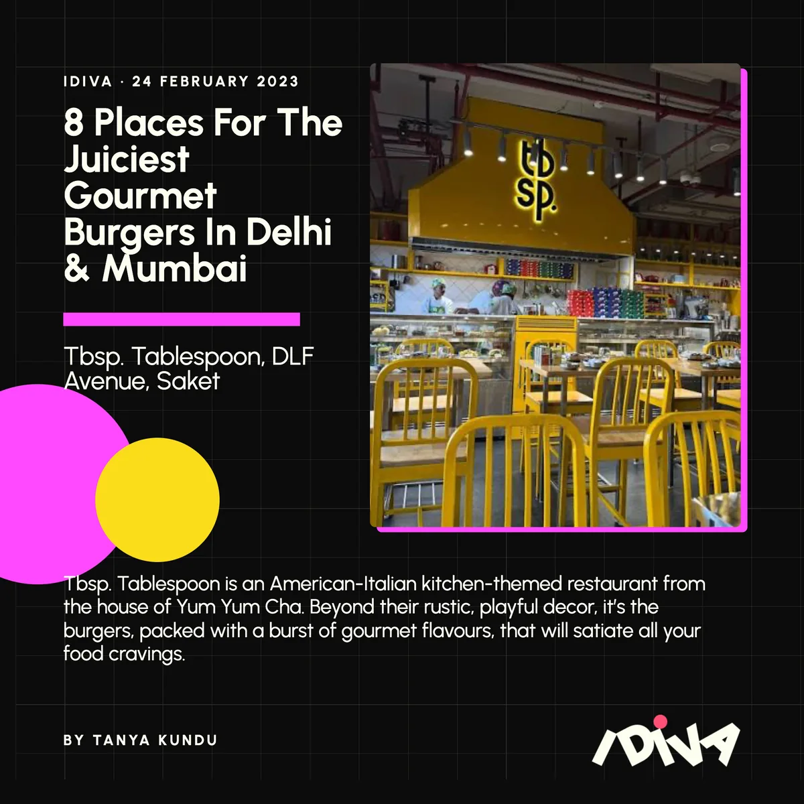
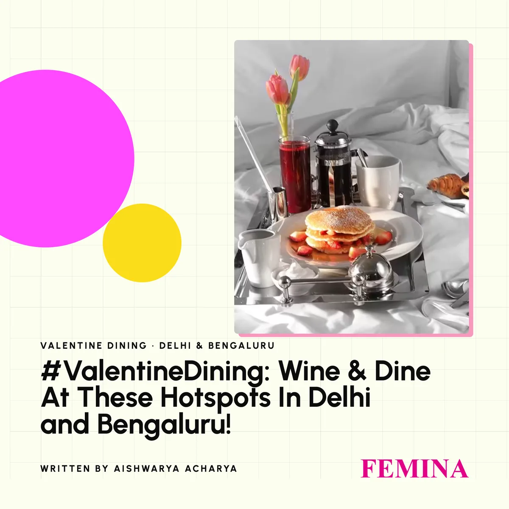
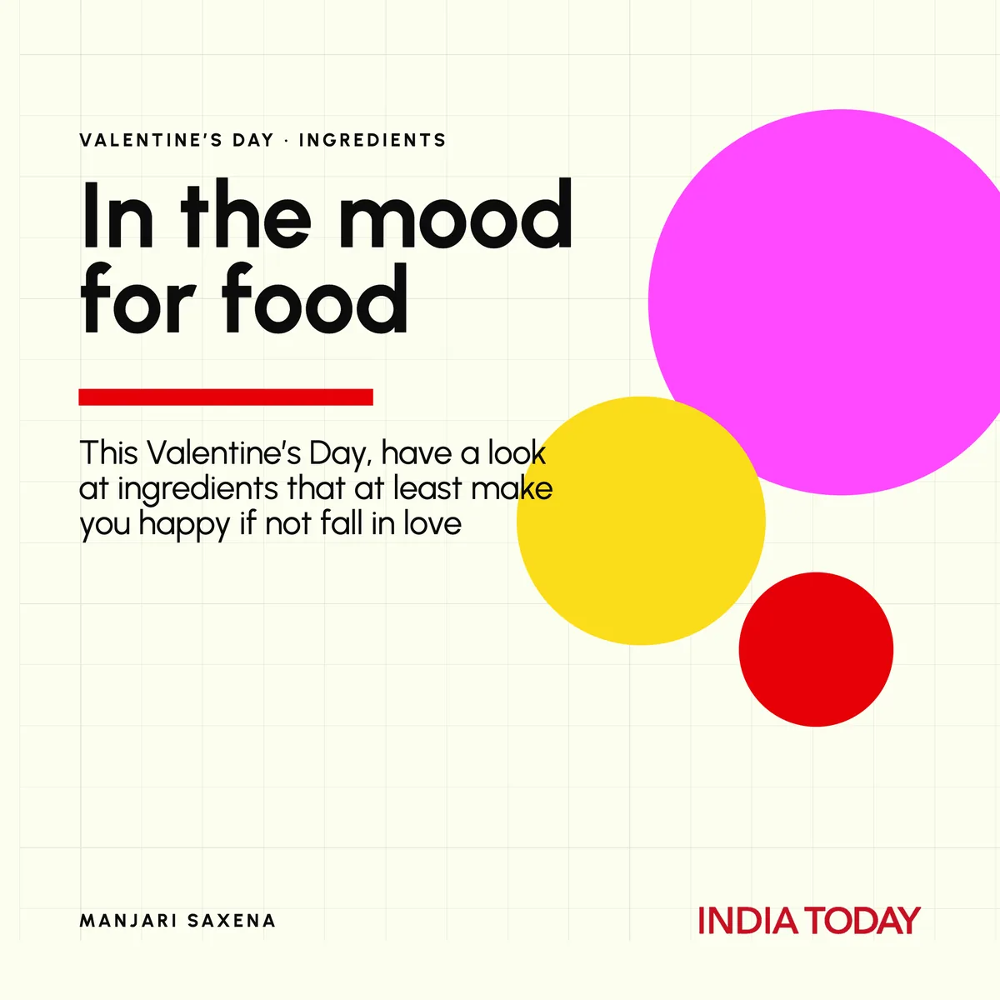
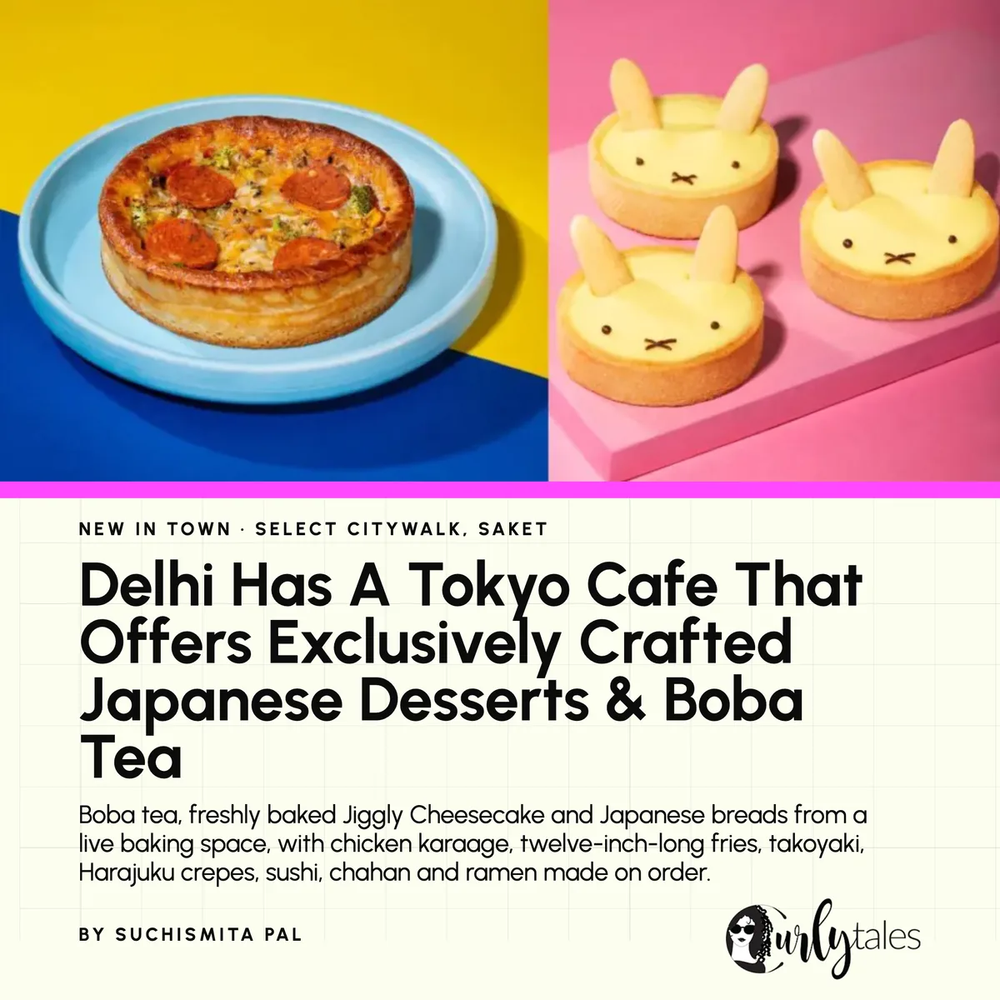

Menu
Carbon
/
White
Marketing
Talent
Journal
Contact
Menu
For the culture
Talent & Branding
Marketing · the five rooms · 35 cases
In their words
On the record
In the building
98 Studio · beta
The journal
Contact — tell us what you’re building.
Scroll ↓ to go back to the page
The press room — coverage our clients earned




Drag